Matched cloud Blender views, 375×812. Same camera, geometry and lights in each pair. Hero and loot omitted; props are the existing placeholders. Crown follows brief3.2m. This is a material look test, not the deployed game.
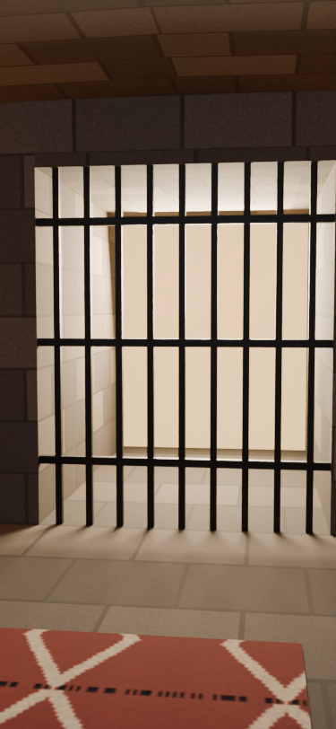
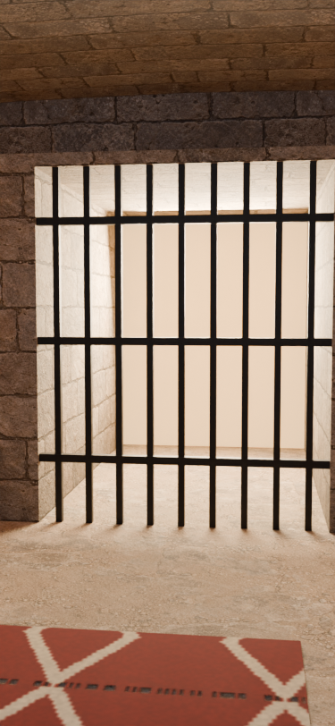
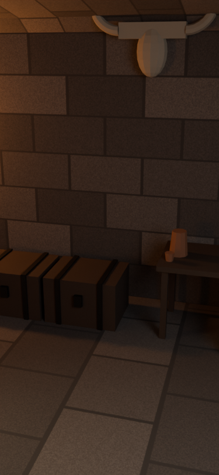
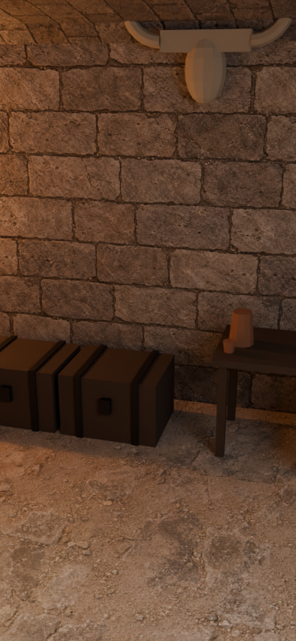
Exact exported GLBs, cloud Blender views. Gate and both chests await DINOv3 access for dedicated reconstruction. These are 1024 source assets; World makes the phone copies.
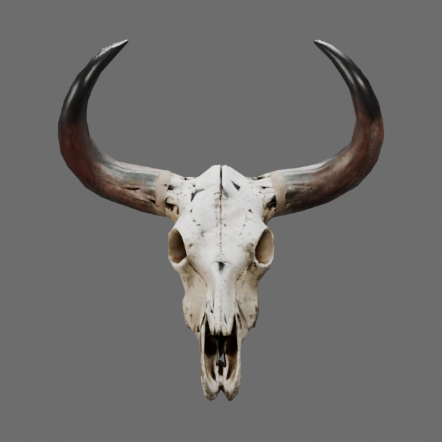
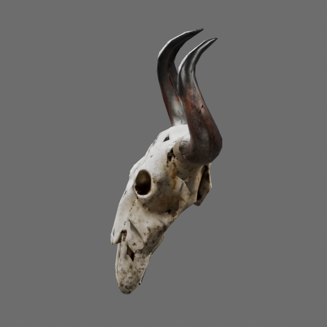
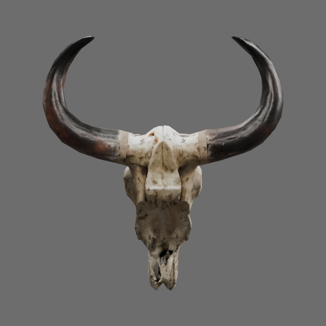
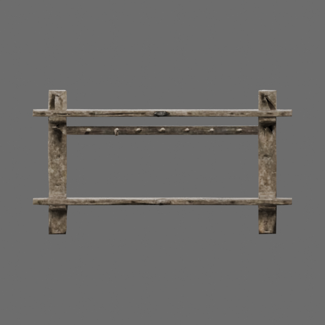
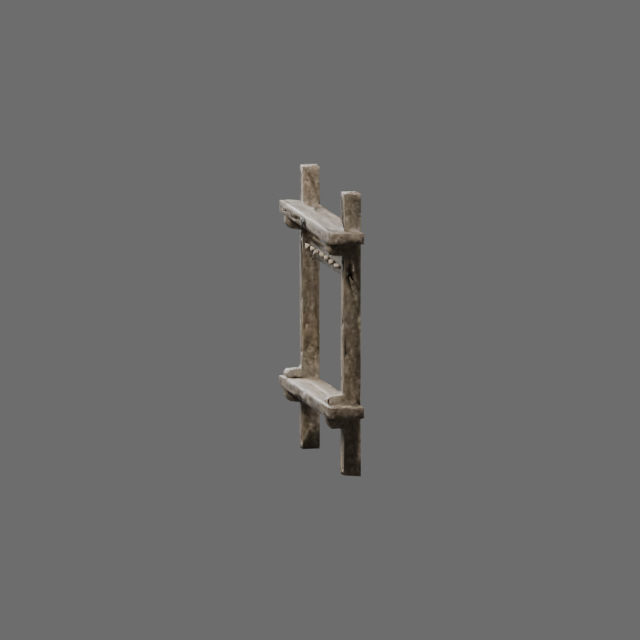
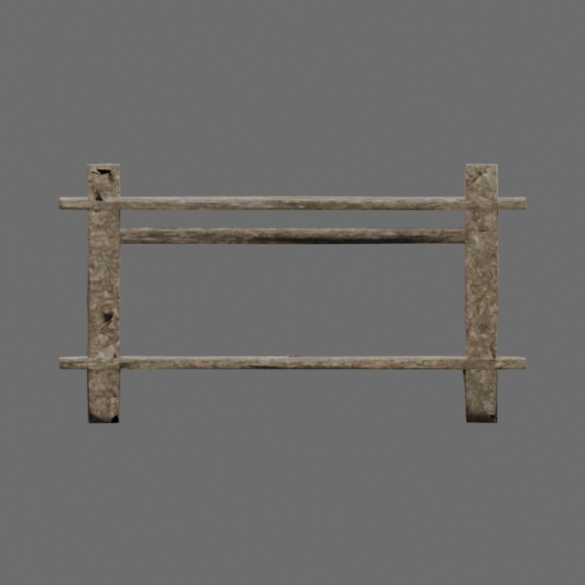
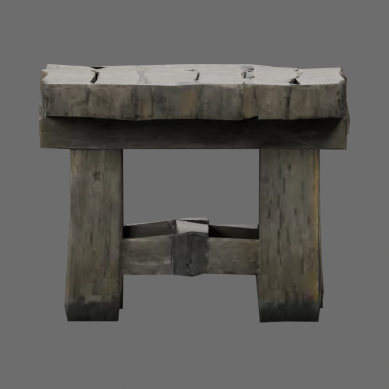
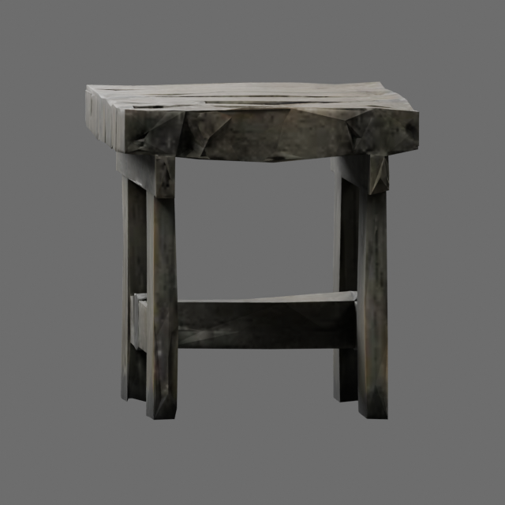
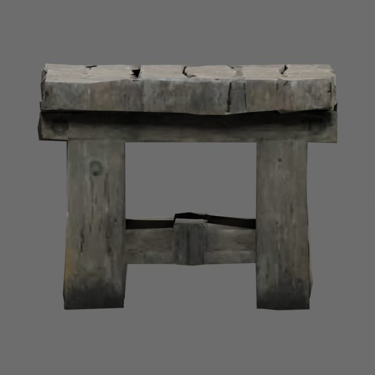
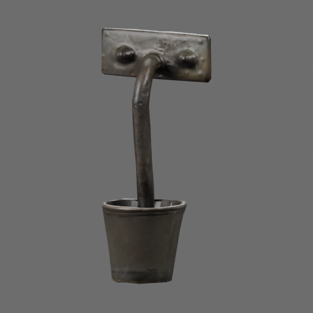
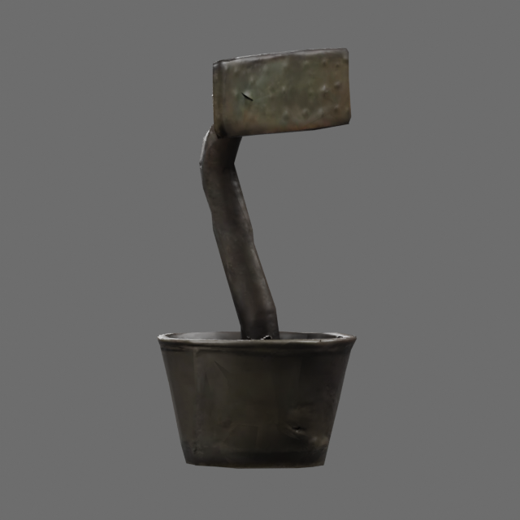
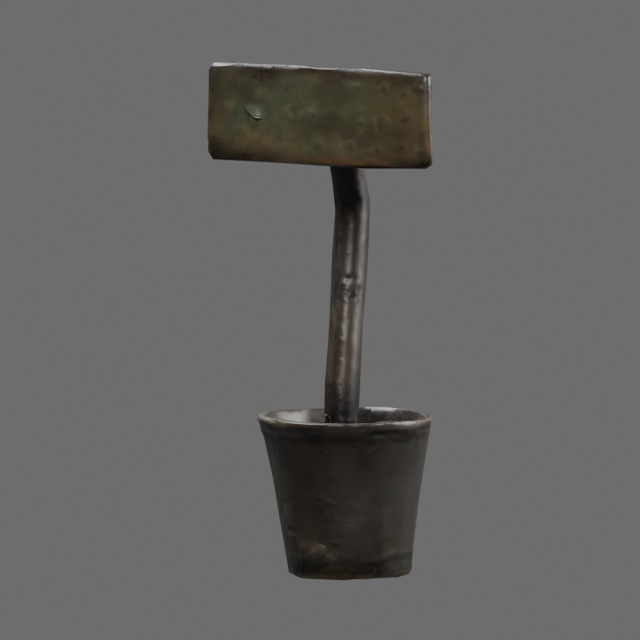